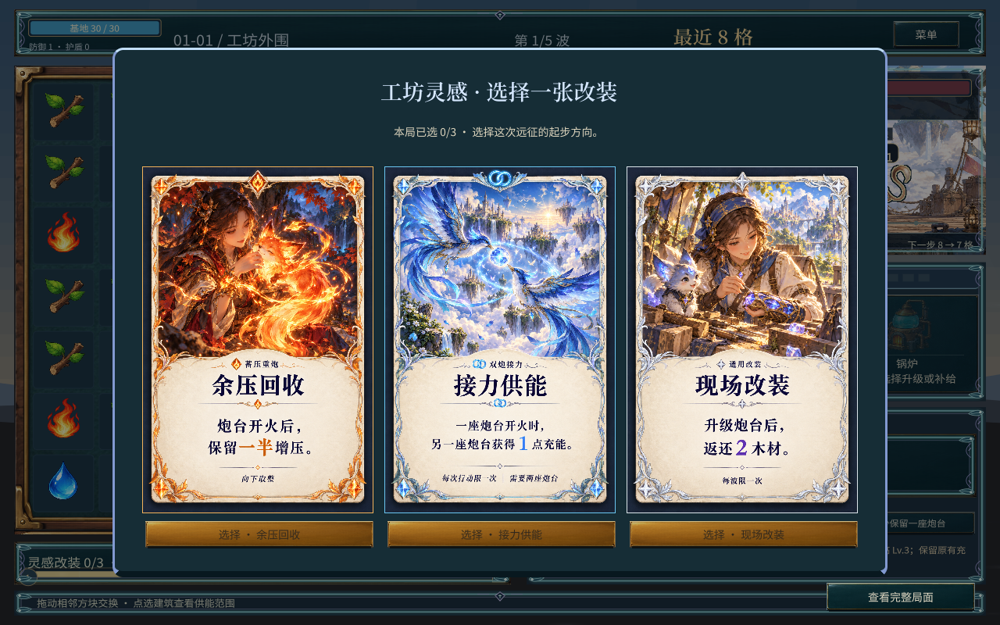

把资源花在需要的地方
炮台分别升级火力、装填与供能；机关经营位置、耐久与附魔。
九隅 / 成长
木材强化建筑，改装改变打法。让这一局拿到的牌，与已经布下的阵地配合起来。
炮台分别升级火力、装填与供能；机关经营位置、耐久与附魔。
扩充弹仓接上后续改装，或围绕碰撞、附魔和魔像培养建立打法。

场上已空、增援还没到，可以提前迎战：剩余等待换成最多 3 木材，只召下一批，当手不动。
经验卡和木材升级都在加同一类数值，选择重叠。
数值归木材，打法归卡牌。三条线不再共用两次机会。
基础弹仓收成两发，多一发做成分支入口。提前迎战用来少空等。